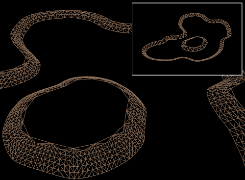

<h2>Tessellation</h2>
<figure>
    
    <figcaption>Shore tessellation</figcaption>
</figure>
<figure>
    
    <figcaption>Koi tessellation</figcaption>
</figure>
<!--Terrain improvements-->
<!--Behavior updates-->
<!--Water-->
<!--Culling-->
<!--Pipeline engine optimizations-->
<!--Fish LODs-->
<!--Terrain tessellation-->
<!--Data oriented design-->